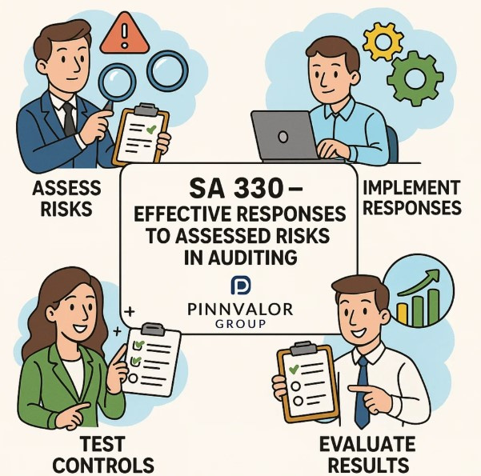

SA 330 – Effective Responses to Assessed Risks in Auditing
In the auditing world, identifying risks is crucial—but responding to those risks effectively is what ensures audit quality. The Standard on Auditing (SA) 330, titled "The Auditor’s Responses to Assessed Risks", provides a structured framework for auditors to respond to risks of material misstatement identified during an audit.
Are your audit procedures truly aligned with the risks you've identified?
Identifying risk is only the beginning—responding with precision is what defines audit excellence.
This standard, issued by the Institute of Chartered Accountants of India (ICAI), is an integral part of the audit process under the Companies Act, 2013. Let's explore SA 330 in depth and understand how it helps auditors execute their responsibilities with diligence and precision.
üîç What is SA 330?
SA 330 outlines how auditors should design and implement audit procedures that directly address the assessed risks of material misstatement at both the financial statement and assertion levels. It ensures that the audit work performed is proportionate to the risks involved, ultimately improving the quality and credibility of the financial statements.
üéØ Objective of SA 330
The primary objective of SA 330 is to enable the auditor to:
- Design and perform audit procedures that are responsive to the assessed risks.
- Obtain sufficient and appropriate audit evidence.
- Reduce audit risk to an acceptably low level.
üß≠ Key Components of SA 330
1. Overall Responses to Financial Statement-Level Risks
These are broad measures applied to the audit as a whole. When risks are pervasive (e.g., risk of management override of controls), auditors may:
- Assign more experienced or skilled staff to the engagement.
- Increase the level of supervision and review.
- Incorporate greater unpredictability in audit procedures.
- Modify the nature and extent of documentation and communications.
2. Responses to Risks at the Assertion Level
At this level, the auditor focuses on specific items in the financial statements (e.g., inventory, receivables) and the assertions related to them, such as existence, accuracy, completeness, valuation, etc.
The auditor may choose:
- Substantive procedures: Tests of details, confirmations, analytical procedures.
- Tests of controls: If the auditor believes controls are operating effectively and plans to rely on them.
3. Tests of Controls
Where the auditor plans to rely on the internal controls of the entity, SA 330 requires testing the operating effectiveness of those controls. This includes:
- Inquiry and observation.
- Inspection of relevant documents.
- Reperformance of the control by the auditor.
The nature, timing, and extent of these tests depend on factors such as:
- The strength of the control environment.
- The complexity of the control.
- The frequency of its operation.
4. Substantive Procedures
Even when relying on controls, SA 330 mandates that substantive procedures must be performed for each material class of transactions, account balance, and disclosure.
These may include:
- Analytical procedures (e.g., ratio analysis, trend analysis).
- Tests of details (e.g., verifying invoices, inventory counts, contracts).
For significant risks, only substantive procedures can provide the necessary assurance.
üìã Documentation Requirements
As per SA 330, auditors must document:
- The overall audit strategy and responses.
- The rationale for selecting particular audit procedures.
- The results of those procedures and the conclusions drawn.
This ensures transparency, accountability, and audit trail integrity.
⚠️ Special Considerations for Significant Risks
Significant risks—those that require special audit consideration—demand tailored responses, such as:
- More extensive testing.
- Lower materiality thresholds.
- Involvement of experts (e.g., valuers, actuaries).
- Enhanced professional skepticism and audit judgment.
ü߆ Professional Judgment & Skepticism
SA 330 emphasizes that auditors must exercise:
- Professional judgment in designing responses.
- Professional skepticism throughout the audit process—especially when management’s assertions appear inconsistent with other evidence.
✅ Why SA 330 Matters
- Helps minimize audit risk.
- Strengthens the link between risk assessment and evidence gathering.
- Ensures efficiency and effectiveness in the audit process.
- Supports regulatory compliance and enhances audit quality.
üîö Conclusion
SA 330 is not just a compliance requirement—it's a practical tool that transforms risk identification into risk mitigation. By guiding auditors in developing well-designed, proportionate, and focused responses to assessed risks, this standard ensures that audits are both robust and reliable.
In today’s complex business environment, auditors who effectively apply SA 330 are better equipped to uncover material misstatements, serve the public interest, and uphold the trust stakeholders place in audited financial statements.
Need help applying SA 330 in real audits or building audit documentation? Let’s connect and explore practical tools, templates, and strategies tailored to your audit environment.